Objective
The goal of this investigation is to determine whether the SOC287 alert represents a genuine threat that requires further investigation
Investigation steps
Reviewed the high level details of alert SOC287 and took ownership of the case for further investigation to be carried out.
Event Time : Jun, 06, 2024, 03:12 PM
Rule : SOC287 - Arbitrary File Read on Checkpoint Security Gateway [CVE-2024-24919]Hostname : CP-Spark-Gateway-01
Destination IP Address : 172.16.20.146
Source IP Address : 203.160.68.12
HTTP Request Method : POST
Requested URL : 172.16.20.146/clients/MyCRL
Request : aCSHELL/../../../../../../../../../../etc/passwd
User-Agent : Mozilla/5.0 (Macintosh; Intel Mac OS X 10.15; rv:126.0) Gecko/20100101 Firefox/126.0
Alert Trigger Reason : Characteristics exploit pattern Detected on Request, indicative exploitation of the CVE-2024-24919.
Device Action : Allowed
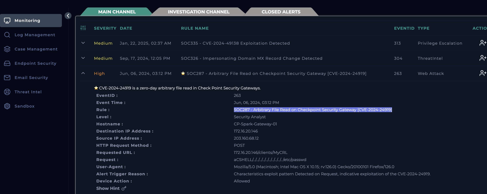
The alert is transferred into the Investigation Channel, where I created the Case to follow playbook and mark whether this alert if a true or false positive.
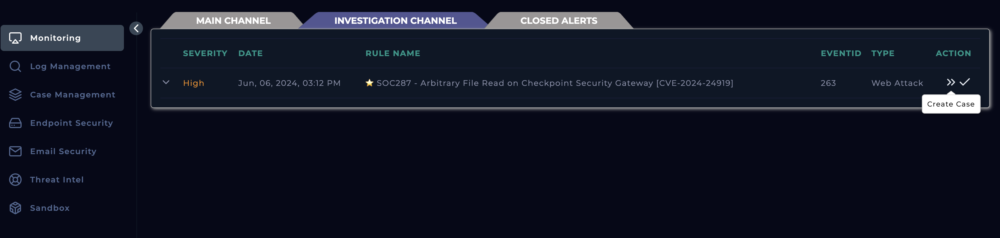
Initiated the playbook to follow a structured procedure in investigating the alert
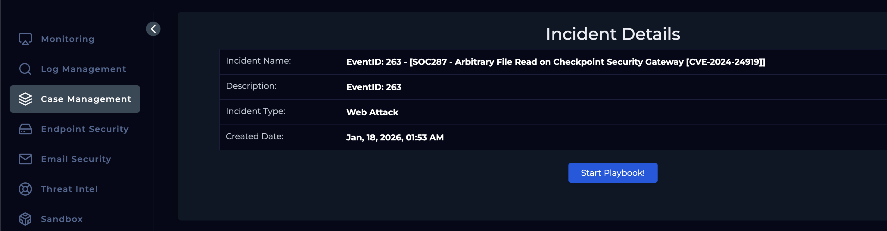
Carried out some background research based on the CVE the alert was corresponding to using NVD (National Vulnerability Database), where I was able to the understand the following:
This vulnerability allows anyone on the internet, without logging in, to trick a vulnerable Check Point device into revealing sensitive files it should never expose. These files can include password hashes, configuration files, or encryption keys, which attackers can then use to gain deeper access to the network.
The issue happens because the device does not properly restrict what files can be accessed through its VPN-related components. This flaw was actively exploited by attackers in the real world, making it especially dangerous.
Therefore, the alert seems to state the server of 172.16.20.146 named CP-Spark-Gateway-01 seems to have been impacted by a web attack.
Reviewed the source IP address in both VirusTotal and Threat Intel to see if this IP is flagged as malicious. In the Threat Intel module the IP address is flagged with the tag of the CVE while in Virus total it shows up as 1 out of 93 security vendors flagged the IP address as malicious. Looking further in the report from Virus Total, the geolocation of the IP address seems to be Hong Kong.
This confirms the traffic must have been malicious and through the alert generated we can see it was allowed.
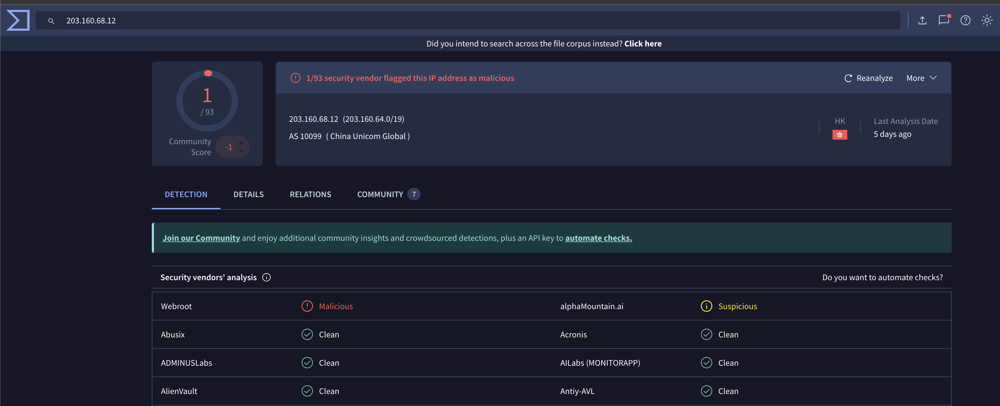
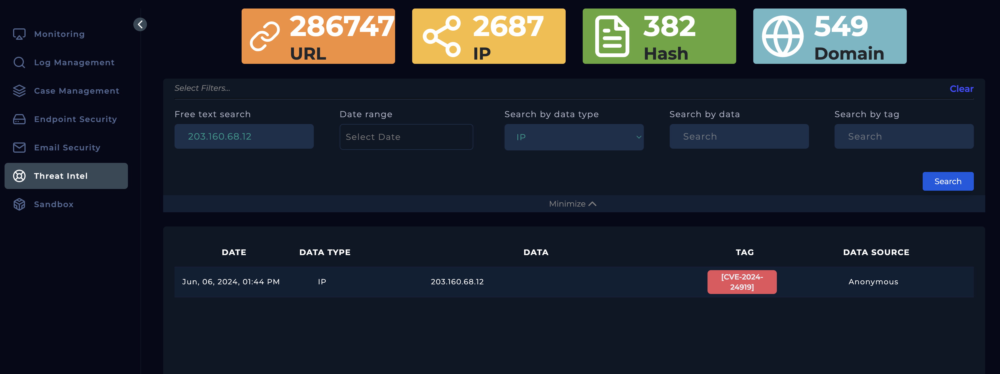
Headed into the Log Management module and filtered by the destination IP address resulting in three records.
The log shows malicious payload embedded inside the HTTP request which is a known exploitation technique for this vulnerability. The payload includes directory traversal (../../../../) to reach a sensitive data storage system path on the server (etc/password). The second event shows a payload targeting the path of (etc/shadow), which is an area on Unix-like operating systems that stores hashed passwords and is more sensitive than /etc/password. Therefore, this shows that this is an example of LFI.
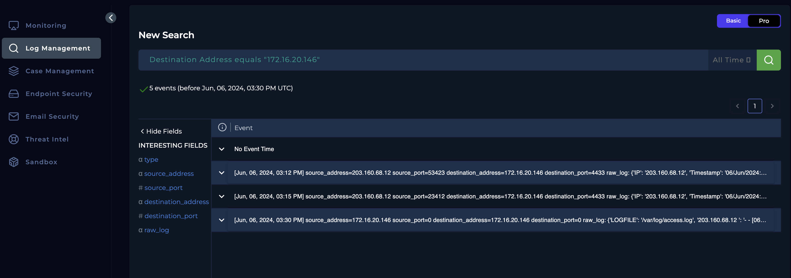
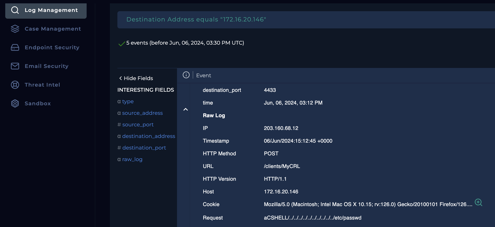
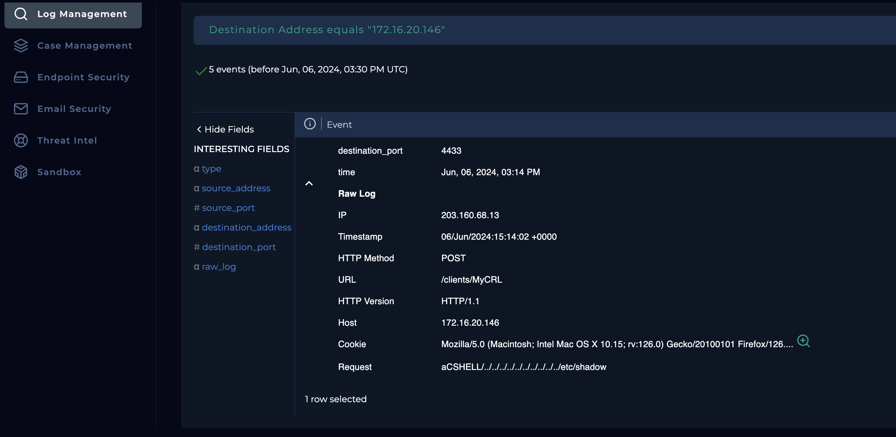
Checked in the Email Security model to see if there has been any emails sent about any planned tests, but seemed like there was nothing that matches the date of the incident
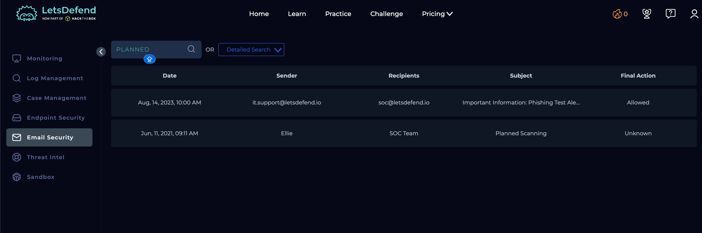
To understand whether the attack was successful, reviewed the log further and in the status code, you can see 200 indicating the attack was successful.
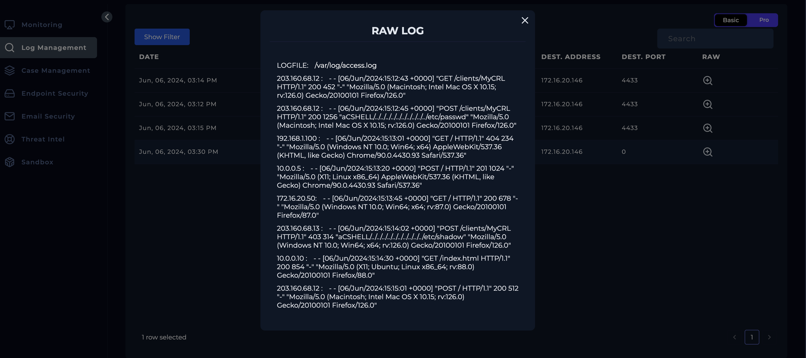
As now I have confirmed the attack was successful, the affected device must be contained until disinfected to limit the impact of the security, protect data and operations, facilitate effective incident response, preserve evidence for forensic analysis, and ensure compliance with legal and regulatory requirements.
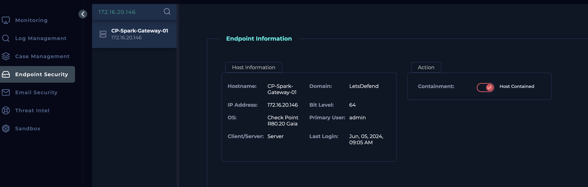
Analysis
Based on the investigation conducted, the SOC287 alert related to CVE-2024-24919 is confirmed to be a true positive and represents a genuine security incident requiring immediate response. The alert identified a malicious HTTP POST request targeting the Check Point Security Gateway (CP-Spark-Gateway-01) that leveraged a known arbitrary file read vulnerability through directory traversal techniques.
Threat intelligence enrichment and VirusTotal analysis of the source IP address (203.160.68.12) revealed indicators associated with exploitation of this specific CVE, with additional contextual risk due to its external origin and geolocation. Log analysis further confirmed multiple attempts to access highly sensitive system files such as /etc/passwd and /etc/shadow, demonstrating a clear case of Local File Inclusion (LFI) exploitation.
Critically, HTTP response status codes of 200 indicate that the malicious requests were successfully processed by the target system, confirming that the exploitation attempt was successful. No evidence was found to suggest the activity was part of authorized testing, as no related communications were identified within the Email Security module.
Given the active exploitation, confirmed success of the attack, and the sensitivity of the targeted files, the incident poses a high risk to system integrity and data confidentiality. Immediate containment of the affected device is required to prevent further compromise, preserve forensic evidence, and support remediation efforts in line with incident response and compliance requirements.
Key learnings
This investigation highlighted the importance of thorough alert validation and structured incident response when dealing with high-risk vulnerabilities. By following the SOC playbook and correlating SIEM logs with external threat intelligence sources, it became clear how quickly an unauthenticated vulnerability such as CVE-2024-24919 can be exploited in real-world scenarios. The analysis reinforced the value of understanding attacker techniques, particularly directory traversal and Local File Inclusion, and how log indicators such as payload structure and HTTP response codes can be used to confirm attack success. Additionally, the case demonstrated the critical impact of allowed malicious traffic and the necessity of timely containment to reduce exposure, preserve evidence, and protect sensitive data. Overall, the investigation strengthened practical SOC skills in alert triage, threat intelligence enrichment, log analysis, and decision-making under incident response procedures.